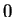
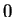

Next: Predict
Up: Application of the STRFPAK
Previous: Display STRFs Window
Contents
There are two options to compute prediction and validation in the current
version of STRFPAK. These options are implemented by setting
the value of parameter  . After clicking the
Get PredFiles button in the main window, a window
appears waiting for the input value of the
from the user.
If is set to , no new data pairs are required
since the estimated Jackknifed STRF is used on the unused data pairs.
If is set to ,
the Get Datafiles for
Prediction window is going to show up.
New stimulus-response data pairs have to be selected by following the
similar procedures to the previous Get Datafiles window.
For how to select new data for prediction and validation in
Get Datafiles for Prediction and Validation window,
please refer to the instruction for the Get Datafiles window.
. After clicking the
Get PredFiles button in the main window, a window
appears waiting for the input value of the
from the user.
If is set to , no new data pairs are required
since the estimated Jackknifed STRF is used on the unused data pairs.
If is set to ,
the Get Datafiles for
Prediction window is going to show up.
New stimulus-response data pairs have to be selected by following the
similar procedures to the previous Get Datafiles window.
For how to select new data for prediction and validation in
Get Datafiles for Prediction and Validation window,
please refer to the instruction for the Get Datafiles window.
2003-03-19